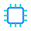
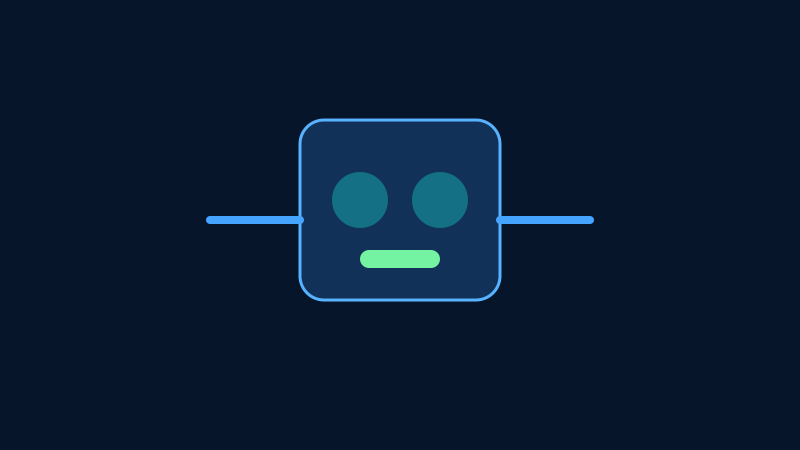

Beginner
Electricity Fundamentals
Voltage, current, resistance, power, and safe measurement habits.
Read ArticlesThis roadmap takes you from first principles to modern and advanced electronics without overwhelming jumps.
Voltage, current, resistance, power, and safe measurement habits.
Read ArticlesResistors, capacitors, inductors, diodes, and how to choose them correctly.
Read ArticlesBand theory, doping, PN junction behavior, and practical device behavior.
Read ArticlesBJT and MOSFET operation for switching and amplification.
Read Articles
IntermediateOp-amps, filters, feedback stability, and analog design workflow.
Read ArticlesCombinational and sequential logic with practical timing insights.
Read ArticlesArchitectures, buses, memory maps, and firmware-centric design.
Read Articles Intermediate
IntermediateTime and frequency domain, sampling, noise, and signal integrity basics.
Read ArticlesAdvancedModulation, channels, error control, and practical protocols.
Read Articles
AdvancedFeedback control, sensors, actuators, and industrial reliability.
Read Articles Advanced
AdvancedIoT, edge AI, low-power design, and connected systems.
Read Articles Advanced
AdvancedHigh-speed design, mixed-signal systems, EMC, and optimization.
Read ArticlesComplete each topic in sequence, build one small project per milestone, and keep a circuit journal to retain key lessons.
For every concept article, spend at least 30 minutes implementing or simulating one circuit so theory turns into intuition.